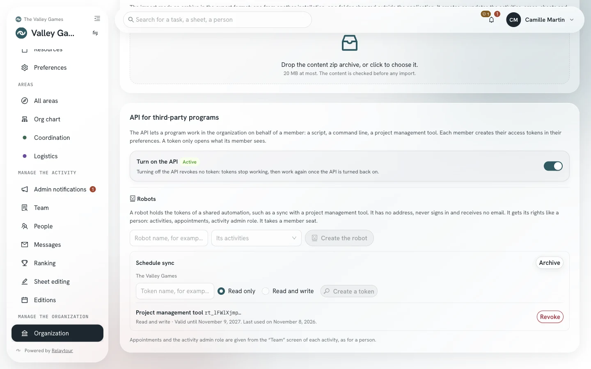
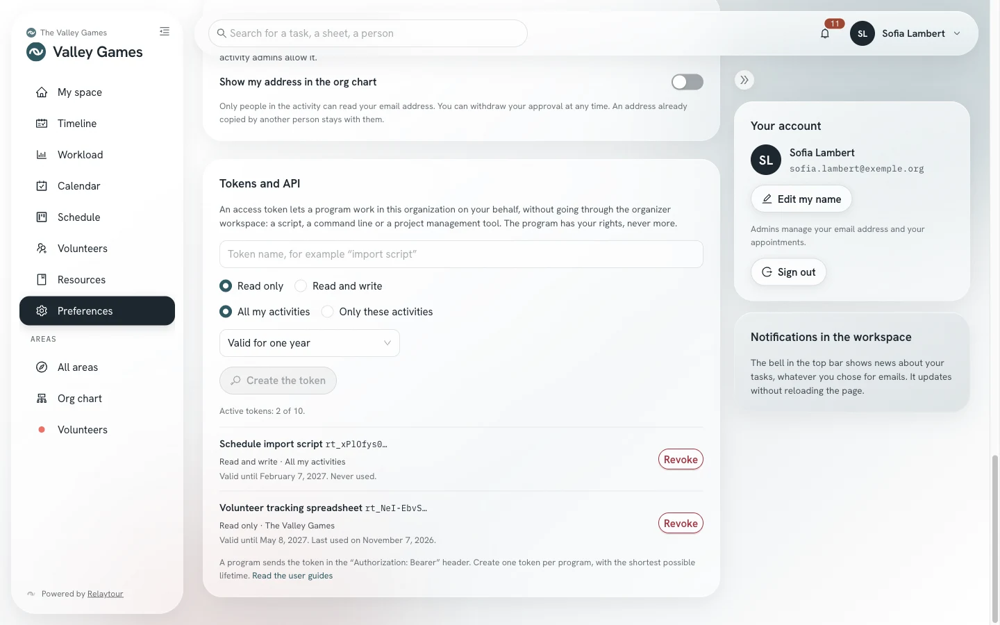

The API lets a program work in your organization on your behalf: a script, a command line, a spreadsheet or a project management tool. The program presents an access token, and Relaytour grants it your rights, never more.
This guide is for the people who write or install a program. Organization admins also find how to turn on the module and how to use robots.
Starting point
What an access token does
An access token belongs to one person and one organization. It starts with rt_ and is shown only once, when it is created. Relaytour keeps only a fingerprint of it: a person who loses a token creates another one.
The program reads and edits what the person reads and edits in the organizer workspace. The token can narrow these rights: read only, or a few activities only. It never gives access to the account itself: not to preferences, other tokens or full exports.
Organization admins
Turn on the API module
The API module is off when an organization is created. While it stays off, nobody creates a token and no token gets an answer.
The “API for third-party programs” panel
/<activity>/organisation
The panel is at the bottom of the “Organization” screen. It shows the state of the module and holds the admins’ switch.
Turn on the APIOpen the module. Each member can then create tokens in their preferences.
Turn offClose the module. No token is revoked: tokens stop getting answers, then work again when the module is turned back on.

The “API for third-party programs” panel, in the sample organization.
State shown
What it means
Who changes it
Off
The module is closed. Existing tokens get no answer.
Organization admins
Active
The module is open. Tokens get answers.
Organization admins
Turned on by your hosting provider
The installation administration opened the module. The switch is locked.
The installation administration
Not offered by your hosting provider
The installation administration closed the module for this organization.
The installation administration
Suspended
The installation administration suspended the API, for example after unusual use. All tokens of the organization are revoked, and the panel shows the reason.
The installation administration
A read-only organization keeps the API in read mode: tokens read, and every write is refused.
Each member
Create a token
Each person creates tokens in their preferences. The “Tokens and API” item in your profile menu leads there directly.
The “Tokens and API” panel
/<activity>/preferences#jetons
Token nameName the program that will use the token, for example “import script”. This name helps you recognize the token in the list.
Read onlyLimit the program to reading. This choice is selected by default.
Read and writeLet the program create, edit and comment on tasks, within your rights.
Only these activitiesChoose the activities the program sees. Without this choice, the token covers all your activities.
LifetimeChoose the end date of the token. A token lasts one year at most, and one year by default.
Create the tokenShow the token. Copy it into your program right away: it will not be shown again.
RevokeEnd the token. The program gets a refusal from its next request.

The “Tokens and API” panel, in the sample organization. The tokens are fictional.
The list shows the first eight characters of each token, its scope, its activities, its end date and its last use. A person has at most ten active tokens in an organization.
When a person is archived, their tokens are revoked. When their rights change in the organization, the rights of their tokens change with them.
Full transport
Call the GraphQL API
The GraphQL API is the one of the organizer workspace, at the /graphql address of your installation. The program sends the token in the Authorization header. The organization and its rights come from the token: no other header is needed.
The jetonCourant query returns the bounds of the token: its scope, its activities and its end date. A program reads it at startup to know what it can do. The names in the schema are in French.
The schema contract is published in the source code repository, in the packages/server/schema.graphql file. Account operations stay reserved to a sign-in in the organizer workspace: token management, preferences, subscriptions and full exports.
Simple transport
Call the REST API
The REST API covers the common needs of a third-party tool: read activities, follow and edit tasks, read sheets. It answers under /api/v1 with the same token, and each route checks the same rights as the GraphQL API.
The OpenAPI contract can be read without a token at /api/v1/openapi.json. A project management tool or a client generator imports it as it is.
The visible activities, within the limits of the token.
GET /activites/{activiteId}/editions
The periods of an activity, and /edition-courante for the current period.
GET /activites/{activiteId}/perimetres
The areas of an activity.
GET /activites/{activiteId}/equipe
The people of the team, without their addresses.
GET /activites/{activiteId}/taches
The tasks of a period, by area.
GET /editions/{editionId}/mes-taches
The tasks assigned to the person.
GET /editions/{editionId}/priorites
The priorities of the period.
GET /taches/{id}
A task, and /commentaires for its thread.
POST /taches
Create a task in an area where the person writes.
PATCH /taches/{id}
Edit the title, the description or the due date of a task.
POST /taches/{id}/statut
Change the status of a task.
POST /taches/{id}/assignation
Assign a task, or remove an assigned person.
POST /taches/{id}/commentaires
Comment on a task.
GET /activites/{activiteId}/fiches
The readable sheets of an activity, and /fiches/{slug} for one sheet with its content.
An edit can carry the version of the task as read (versionAttendue) or its status as read (statutAttendu). Relaytour then refuses to overwrite a change made in the meantime by another person, with status 409.
Responses
Read errors and limits
The GraphQL API returns each error with a code in extensions.code. The REST API returns the same code in a { "erreurs": [{ "code", "message" }] } body, with the HTTP status below.
A refusal of the token itself (invalid token, closed module, rate exceeded) also returns this HTTP status on /graphql, before the query runs.
Code
REST status
What it means
JETON_REQUIS
401
The request carries no token.
JETON_INVALIDE
401
The token is unknown, revoked or expired, or its person is archived. The message is the same in all these cases.
API_INACTIVE
403
The module is off, not offered or suspended. The response gives the cause, and the reason for a suspension.
PORTEE_INSUFFISANTE
403
A read-only token asked for a write.
FORBIDDEN
403
The person does not have this right, or the activity is outside the limits of the token.
SAISIE_INVALIDE
400
A value sent is invalid. The message names the field.
CONFLIT_VERSION
409
The task changed since it was read.
LIMITE_DE_DEBIT
429
The token exceeded its rate. The Retry-After header gives the wait in seconds.
Per token
A token sends at most 120 requests per minute.
Per address
An IP address that presents 60 refused tokens within 15 minutes is blocked until the end of that period.
Per query
A GraphQL query that is too deep or too wide is refused before it runs, as in the organizer workspace.
Organization admins
Hand an automation to a robot
An automation shared by a team should not depend on the account of one person: a sync with a project management tool, or a shared script. A robot is a member of the organization without sign-in. It holds the tokens of this automation, and its actions appear under its name in task threads.
Create a robot
In the API panel, under “Robots”, an organization admin names the robot and chooses its activities. An organization has at most five active robots, and each robot takes a member seat.
Give it rights
The admins of each activity assign the robot to areas from the “Team” screen, like a person. A robot can be an activity admin, never an organization admin.
Manage its tokens
The admin creates at most five active tokens per robot and revokes them from the same panel. Archiving the robot revokes all its tokens and frees its seat.
A robot has no reachable address. It receives no email, no notification and no sign-in code, and it appears neither in the ranking nor in the org chart.
Good practices
Protect your tokens
One token per programCreate a separate token for each program. You can then revoke one program without stopping the others.
The fewest rights possibleChoose read only and the activities you need. Choose the shortest lifetime that suits the program.
Outside the codeKeep the token in an environment variable or a secrets vault, never in a code repository or a shared document.
Revoke at the slightest doubtRevoke a token as soon as another person may have copied it. The date of last use, in the list, helps you spot unexpected use.